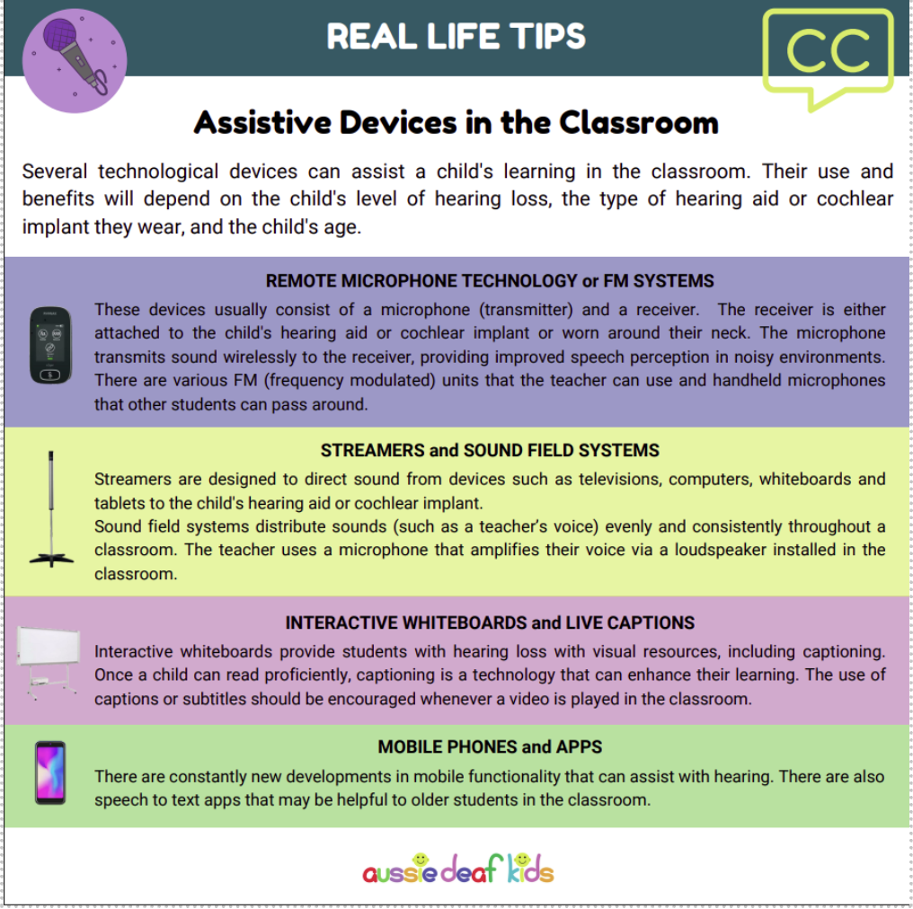

Support for Students
Supporting Access and Participation
Students who are deaf or hard of hearing may require a range of supports to access learning, communication and participation in the classroom. The type of support required will vary between students and may change depending on the classroom, subject, learning activity and communication environment.
Support can include assistive technology, hearing augmentation systems, captioning, communication support and adjustments to the physical learning environment. These supports are designed to reduce barriers and provide students with greater access to the same learning opportunities as their peers.
Assistive Devices in the Classroom
Students who are deaf or hard of hearing can sometimes miss instruction in the classroom, experience listening fatigue, and withdraw from learning when it is difficult to follow the teacher (Mealings et al., 2025).
A range of technological devices can help address these barriers. These may direct sound to a student's personal hearing device, display text and live captions, or convert speech to text. Such technologies can help students access teacher instruction, follow contributions from other students and participate more fully in classroom learning (Aussie Deaf Kids, 2024).

Assistive Technology in Practice
Assistive technology can be particularly valuable when it is integrated into everyday classroom practice rather than treated as an additional or separate provision. Hearing augmentation systems, for example, can support students to hear the teacher more clearly while also reducing the effects of background noise.
The following example from Rutherford Public School demonstrates how hearing augmentation technology can be incorporated into a mainstream school environment.
An Example from Rutherford Public School
Rutherford Public School has implemented Hearing Augmentation Systems to enhance access to spoken communication for students with hearing loss. The technology assists teachers to project their voices, reduces the impact of background noise and helps students hear more clearly in the classroom (Wright, 2024).
The example demonstrates how technology can benefit not only individual students with hearing loss, but the wider classroom environment by improving access to spoken communication.
Video: This Sunday is World Hearing Day. Rutherford Public School has invested in the latest technologies to support students with and without hearing loss.
This example is also featured by the NSW Department of Education in its article on new technology supporting listening in schools.
Choosing the Right Support
There is no single device or technology that will meet the needs of every student who is deaf or hard of hearing. Effective support begins with understanding the individual student's communication needs, preferences and learning environment.
It is also important to remember that assistive technology does not remove every barrier. Students may still experience listening fatigue, difficulty following group discussions or challenges communicating when several people are speaking at once. Technology is most effective when combined with inclusive teaching practices and appropriate classroom adjustments.
Reflection: What types of support might a student who is deaf or hard of hearing need in different classroom situations? Consider how the support might change between whole-class instruction, group work, practical activities and informal conversations.